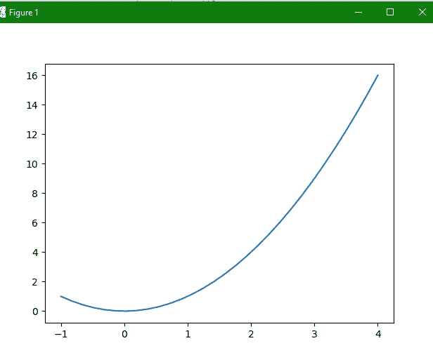

Matplotlib pylab 模块
在本教程中，我们将介绍 Matplotlib 中的 Pylab 模块。
该模块主要帮助将来自 pyplot 和 NumPy 的函数和类引入全局命名空间，这对于 Matlab 用户来说变得更加容易。
该模块为面向对象的Matplotlib绘图库提供程序接口。
该模块安装在 Matplotlib 旁边；同样地， matplotlib.pyplot 是 matplotlib 包中的一个模块。
这是一个非常方便的模块，因为该模块有助于在单个名称空间中批量导入
matplotlib.pyplot(用于绘图)和 NumPy (用于数学和处理数组)。注:</u>【Pylab】与 Python 中的各种内置函数冲突**，因此被废弃，使用不多。
导入 Pylab 模块的语法
导入 pylab 模块的基本语法如下:
from pylab import *
让我们介绍使用 pylab 模块的基本绘图:
pylab 模块使用示例:
为了绘制一条曲线，在这个代码示例中，我们将使用plot()函数。你只需要一对长度相同的数组。让我们看看相同的代码:
from numpy import *
from pylab import *
x = linspace(-1, 4, 30)
y = x**2
plot(x, y)
show()
现在让我们看看由此产生的输出:

如果需要绘制符号而不是线条，那么需要在plot()方法中提供一个额外的字符串参数。
可能的符号和颜色如下:
符号:-，-。, : , .、、o、^、v、< , >、s、+、x、d、d、1、2、3、4、h、h、p、|、_
颜色:b、g、r、c、m、y、k、w
让我们举一个活生生的例子:
使用 pylab 覆盖图
这些图也可以重叠。为此您需要使用多个plot命令。clf()功能用于清除剧情。
让我们看一个叠加图的实例: